介质访问控制子层
信道分配问题
一般来说，共享信道有着下面几种方式：
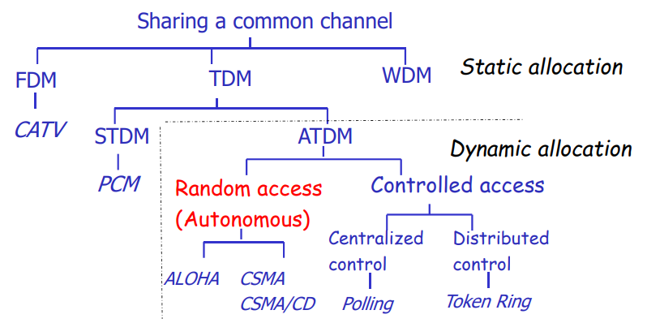
在图中：
-
SDTM表示同步时分复用将时间分成不同的时间片，不同的设备轮流使用介质发送或者接受数据。每个设备都会得到固定长度的时间片供其使用，如果没有使用这个时间片就浪费了。
-
ADTM表示异步时分复用，也被称作统计复用。
对于局域网来说，静态信道分配（FDM、STDM）工作的并不良好。
为了说明为什么工作的不好，我们首先引入一个公式：
在公式中：
-
表示平均服务速度
-
表示平均到达时间
-
表示平均等待时间
如果信道被平均分配到N个静态的子信道：
通过公式可以计算出平均等待时间变成了原来的N倍。
而信道的平均服务速率和平均到达速率均变成了原来的N分之一。
因此静态信道分配表现并不好：
-
如果信道被分配为多个子信道：
-
FDM：延迟相对于原来大大增加
-
TDM：存在一些问题
-
-
在面对互联网上常见的突发请求处理均不好
因此我们常用动态信道分配。
动态信道分配的分类
-
随机访问
-
ALOHA -
CSMA，CSMA/CD，CSMA/CA
-
-
控制访问
-
中心化的控制：轮询
-
去中心化的控制：令牌
-
动态信道分配中涉及的假设
-
每个站点之间都是相互独立的，且是单用户系统
-
只用一个可用的信道
-
如果发送冲突则数据就废弃了
-
时间分配：
-
连续时间分配：随时均可以占用信道时间
-
分时隙：必须等待一个周期（称作时隙）开始才能占用
-
-
载波监听：发送之前能否判断信道是否被占用
-
提供载波监听
-
没有载波监听
-
时间分配和载波监听都是设计协议时需要二选一的选项
介质访问协议
主要注意协议中是如何侦测冲突和从冲突中恢复的。
ALOHA
纯ALOHA Pure ALOHA
第一个提供介质访问控制功能的协议，简单但是富有研究价值。
不使用时隙机制和载波监听。
协议的基本设计就是依赖确认帧来判断是否发生冲突：
-
每个站点不考虑是否冲突，在需要传输的时候直接发送数据帧
-
如果没收到确认帧就重复发送

注意在流程图中，为了避免总是发生冲突，协议中设计了一个随机的等待时间k。
为了衡量不同协议的性能，首先引入一系列参数：
首先用帧时表示发送一个标准的、固定长度的帧需要的时间，同时假定站点产生的新帧符合一个帧时上产生N个帧的泊松分布，可以定义以下两个量表示协议的性能：
-
吞吐量
S，在一个帧时中成功传输的帧数 -
网络负载
P，在一个帧时中到达的帧
不难发现存在下面这个关系：
一个帧被成功发送需要的条件是：在帧发送和传输的工程中没有帧到达。这段时间被称作脆弱期，这段时间的长度是，利用这个值可以得出：
含有时隙的ALOHA Slotted ALOHA
-
将时间分成帧时长度的时隙
-
需要一个中央时钟，或者某种同步机制
-
传输必须在时隙开始时才能开始

-
这是帧发送的脆弱期变为原来的一半：
改进之后的协议吞吐量变成了原来的两倍：
载波监听多点访问
Carrier Sense Multiple Access Protocols，简称CSMA。
这种协议的基本设计思想是：在发送信息之前监听信道。
监听信道有着两种方式：
-
坚持听：一直监听信道，直到空闲
-
周期监听：周期性的监听信道，直到发现空闲
坚持听到发现信道空闲之后是否发送也有着两种方式：
-
1坚持：遇到空闲直接发送
-
P坚持：以概率P决定是否发送还是继续监听
这种协议的脆弱期就是信号在介质传播的时延。

不同CSMA协议的比较
-
1坚持的CSMA
当负载比较低的时候，吞吐量比较大且时延比较低。
当负载比较高的时候，吞吐量比较低。
-
非坚持的CSMA
当负载比较高的时候，吞吐量高。
带冲突检测的载波监听多路访问
CSMA with Collision Detection，简称CSMA/CD。
协议的基本思想：在发送数据的同时监听信道，如果发现冲突就停止发送。
-
如果冲突被发现了，停止发送数据，发送一系列的强化信号提醒所有的站点冲突发生了
-
发送强化信号之后，等待一段随机的时间
-
这就构成了一个半双工的系统。准确的说，是物理层为全双工的，但是数据链路层是半双工的，站点只能出在接收模式或者发送模型。
-
节约了时间和带宽
-
是以太网的基础
-
这个协议没有设计确认帧
-
这个协议的争用期也是信号在介质中传播时延的两倍
CSMA/CD协议有着三个状态：
-
发送期
transmission -
争用期
contention -
空闲期
idle
争用期这个状态比较复杂：
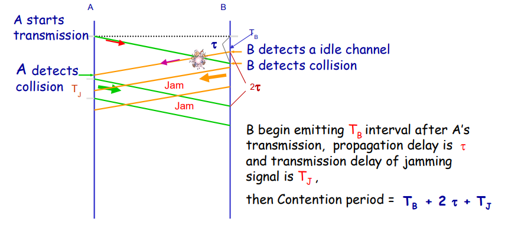
争用时隙：一个站点最多需要两个传播时延才能发现错误，或者说如果在两个传播时延之内没有发现冲突，那么这次传输就不会发生冲突。
这也是以太网中一个重要的网络参数。
1-坚持的CSMA/CD重传的等待时间：
选择一个介于0到d之间的随机数k，在等待k时间之后检查介质是否空闲。
-
如果此时的介质空闲，发送数据
-
如果此时介质不空闲，等待到介质空闲。
如果在重发的过程中冲突再次发生，那么在此重复上述的过程。但是在过程中会记录重试的次数，如果超过一个最大的重发次数，就放弃这次重发。在这个过程中，最大等待时间都会增大到原来的两倍，这被称作指数退避算法。同时最大的等待时间可以设置一个最大值，例如增大到1024就不再增大了。
例如第一次等待的时间介于[0,1]之间，第二次等待就介于[0,3]之间，第n次等待就介于之间。
下面是描述CSMA/CD的流程图：
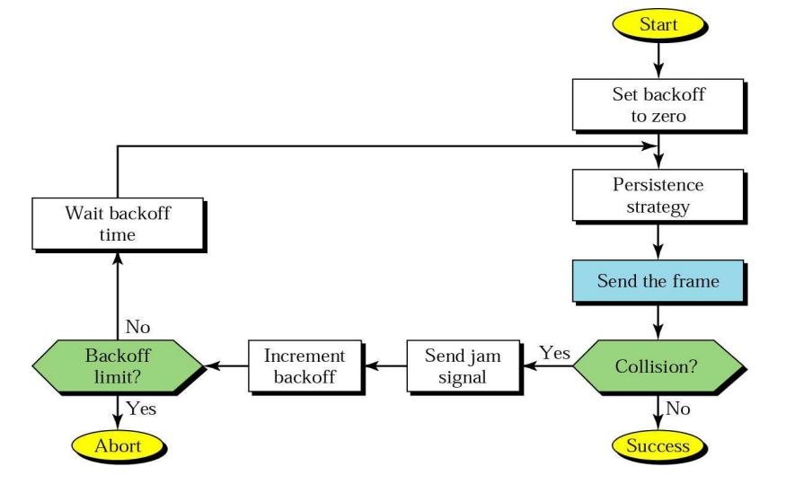
几种介质访问协议的比较
| 协议 | 如何避免冲突 | 如果判断冲突 | 解决冲突 | 脆弱期 |
|---|---|---|---|---|
| Pure ALOHA | 完全不避免 | 定时器没收到确认 | 重新发送 | 2 |
| Slotted ALOHA | 只能在时隙开始时发送 | 同上 | 同上 | |
| CSMA | 发送前监听信道 | 同上 | 同上 | 传播时延的两倍 |
| CSMA/CD | 发送前监听信息 | 发送时监听信息 | 同上 | 传播时延的两倍 |
无冲突协议
无冲突协议主要有以下几种实现方式：
轮训Polling：
-
用在HDLC协议中，在Wi-Fi和蓝牙中也具有一定的应用
-
具有一个中心控制器
-
中心控制器会依次询问每个站点
令牌传送Token Passing:
-
分布式的模型
-
令牌就是一个大小比较小的帧，代表发送消息的权限
-
一般来说使用令牌传送的网络都是一个环网，令牌在相邻的站点之间传递，只有“持有”令牌的站点有权发送数据
-
没有冲突
无线网络WLAN
无线网络中一般具有以下几种要素：
-
无线主机：运行应用程序的终端设备，例如笔记本电脑和手机
-
基站：一般同有线网链接，负责在有限主机和无线主机之间转发数据，在
802.11协议中也被称为接入点access point -
无线链接
无线网络具有以下的特点：
-
随着距离增加信号强度下降，传输的距离有限
-
全方位的传播
-
误码率比较大
而且我们已经设计的协议，比如CSMA/CD，不太适用于无线网络之中。下面给出两个直接使用已有协议可能遇到的问题：
-
隐蔽站问题
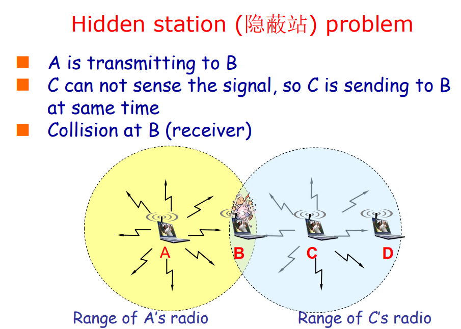
-
暴露站问题
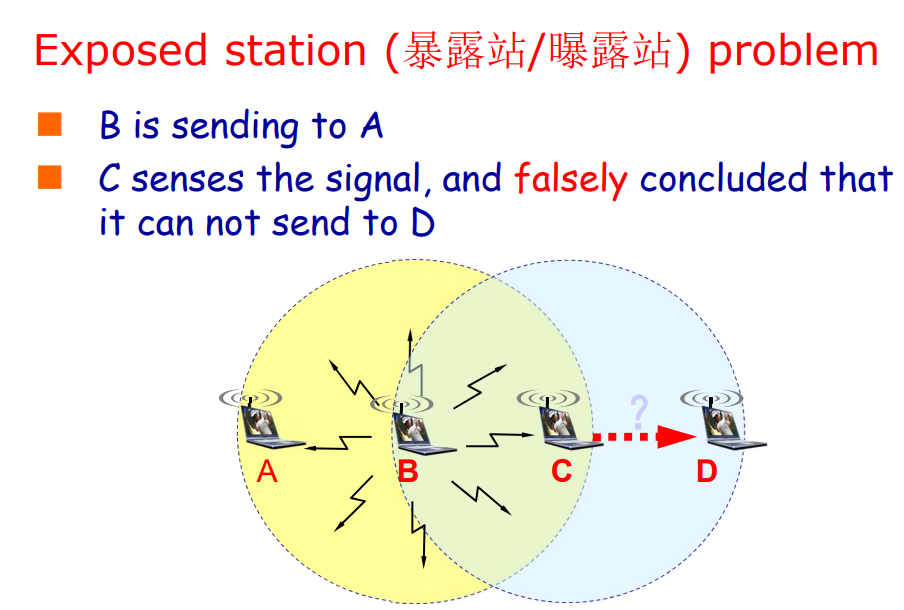
可以用来解决上述问题的方法：
-
采用轮询的方式可以解决
-
分布协调方法：站点之间握手确定谁能发送。这种方式称作CSMA/CA，CSMA with Collsion Avoidance
握手的过程：
-
站点发送
RTS帧给接收方 -
如果接收方可以接受，就返回
CTS帧给发送方，发送法就可以开始发送 -
如果发送方没有收到
CTS帧，那么等待一段随机长度的时间，重新发送RTS帧
局域网参考模型 IEEE 802 RM
局域网的特点：
-
设备的数量有限
-
传输的速度较快
-
误码率比较低
-
支持广播和多播
-
只有单个管理站点
局域网的拓扑模型：
-
总线型
-
星形
-
环形
-
树形
局域网常见的传输介质：
- 双绞线
- 射频
IEEE 802参考模型和OSI模型的对比大致如图所示：
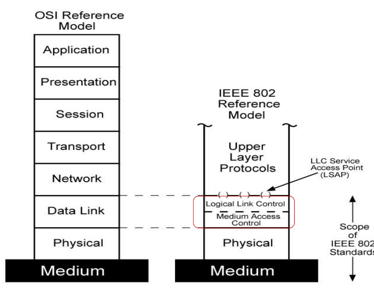
其中参考模型规定了三个层：
-
物理层：
需要处理编码和解码
直接传输位
传输介质和传输拓扑
-
介质访问控制子层
成帧控制、错误纠正、物理地址（
mac地址）使用同样的传输媒介
本地网络交换，虚拟本地网络
-
逻辑链路控制子层
向网络层提供统一的接口，隐藏不同mac子层不同的实现
流量控制和错误控制
通过网桥连接不同的本地网络
逻辑链路控制子层LLC
LLC一般向上提供这些功能：
- 不可靠的数据报服务。例如
Ethernet - 可靠的数据报服务，例如
WiFi - 可靠的面向连接的服务，例如
Token Ring
LLC协议：
- 一般都是基于
HDLC协议，但是并不唯一 - 使用
LSAPs提供多播
mac子层概述
-
在发送端将地址、错误纠正和数据封装成帧
-
在接收端解包帧：
提供地址识别
提供错误侦测
-
控制对于传输介质的访问
-
对于相同的
LLC层，可以使用不同的mac子层
本地网络中的协议封装

IEEE 802 协议概览
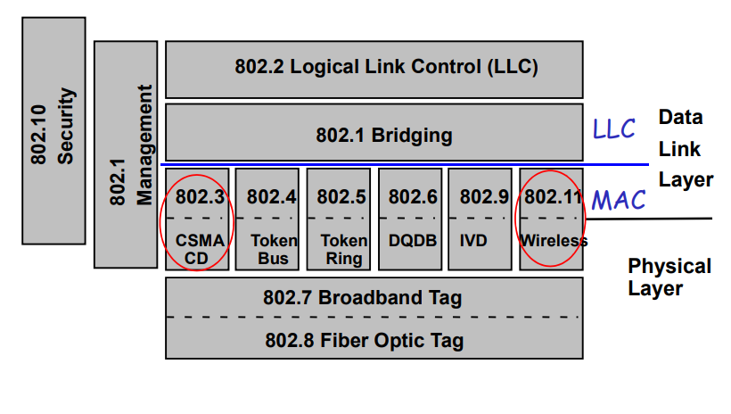
可以发现很多IEEE一些不仅规定了物理层的部分也规定了mac子层的功能。
Ethernet
首先是以太网的发展历史：
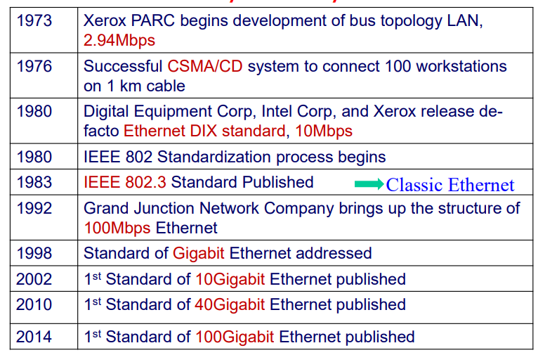
传统以太网 物理层
网卡
网卡Network Interface cards的功能：
- 实现数据链路层和物理层
- 连接到主机的总线上
每块网卡都有着一个唯一的mac地址。
传统以太网 10Mbps
| 名称 | 传输介质 | 最大传输距离 | 节点 | 优点 |
|---|---|---|---|---|
| 10Base5 | 粗同轴电缆 | 500m | 100 | 比较原始的电缆，目前已经被弃用 |
| 10Base2 | 细同轴电缆 | 185m | 30 | 不需要集线器 |
| 10BaseT | 双绞线 | 100m | 1024 | 最便宜的系统 |
| 10BaseF | 光纤 | 2000m | 1024 | 在建筑物之间最好的系统 |
10BaseT
目前较为常用的协议
没用共享的链路，使用集线器将双绞线连接在一起。
使用RJ-45和UTP5作为传输介质：
- 使用双绞线中的两对线，收发各一对
- 差分传输：一对线中的一根线用正电平传输信号，另外一根线用负电平传输同一信号，减少电磁干扰
- 同一对线绞合，减少近端干扰
还有就是连线的标准：
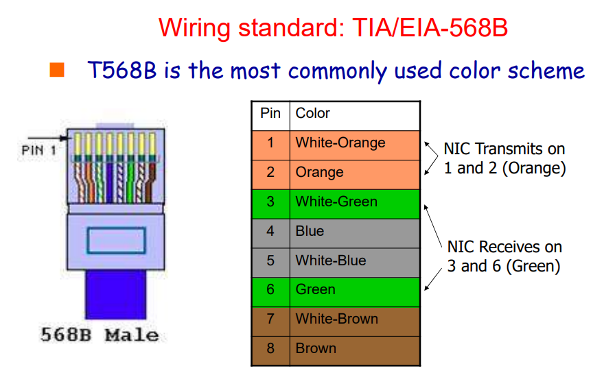
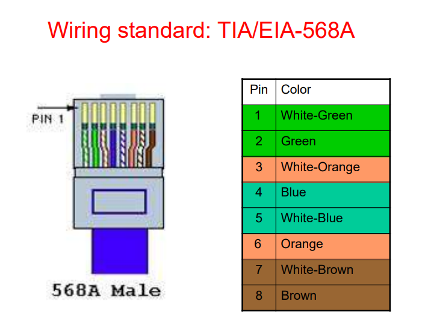
其中在连接设备时，双绞线有两种连接方式：
-
直连线：
两端使用相同的标准，用于将不同的设备，例如电脑和集线器之间连接：
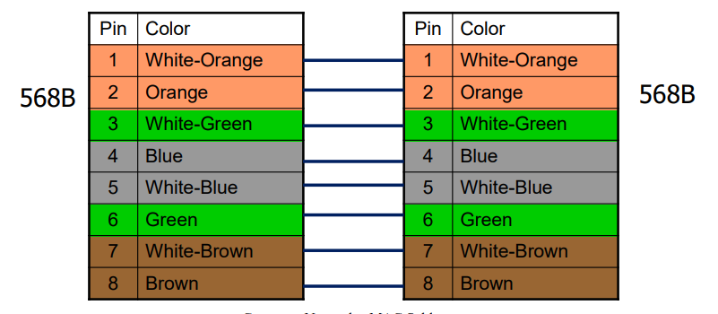
-
交叉线：
两端使用不同的标准，用于链接相同的设备，例如电脑和电脑之间
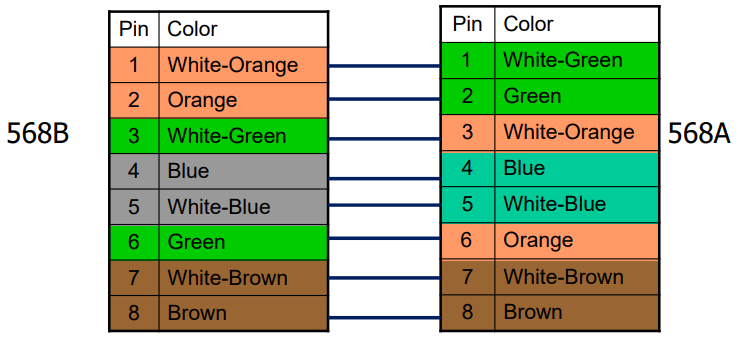
在系统中可以添加中继器以扩大覆盖范围：
- 中继器是物理层协议
- 中继器负责放大信号，让信号可以传播更远的距离
- 可以扩大局域网的网段
- 每个局域网可以最大使用4个中继器
然而中继器已经是过时的技术了
在系统中还有集线器：
- 是一个多端口的中继器
- 在物理上是星形的链路，但是在逻辑上实现了总线的拓扑结果
- 支持多种速度的链路
现在集线器已经完全取代了中继器
传统以太网 MAC子层
采用广播链路，所有网络中的设备都能收到其他设备发送的数据帧，先校验地址是否为自己的地址，如果是就接收反之丢弃。
帧间间隔IFG：协议中要求每个帧之间需要留出规定的时间，对于10BaseT协议，帧间间隔规定为9.6 us。
在实践中，帧间间隔可能比协议中要求的小
在添加帧间间隔之后，1-坚持的CSMA/CD步骤就变为：
- 监听信道是否空闲
- 如果空闲时间超过
IFG，则发送 - 如果信道忙，持续监听
- 边发送边检测冲突
- 如果发现冲突，发送强化信号
- 收到强化信号，所有站点退避一段时间后重新监听信道
帧结构

-
前导码
Preamble：用于时钟同步功能，有物理层负责处理，不计入数据链路层 -
地址：
MAC地址6个字节，常常使用十六进制表示
前3个字节表示网卡的生产厂家，后3个字节表示该网卡厂家生产网卡的序列号，每个网卡是唯一的
利用
mac地址还可以区分单播地址和多播地址 -
种类：表示传输的上层数据的协议种类
-
长度：表示
Data字段和Pad字段的总共长度数据字段有着一个最大值：1500字节
同时数据字段也有着一个最小值：46字节，这也就是为什么需要一个
Pad字段整个帧的最大长度是1518字节
-
校验和：
CRC校验和，如果校验失败，这个帧就被丢弃
为什么需要设置帧的最小值？
为了让主机有足够的时间侦测冲突。这个值可以利用争用时隙这个参数计算出来：
在最大长度为
2500m和4个中继器的10Mbps网络中，传播时延 大概是25.6us，而CSMA/CD的争用时隙长度为，可以计算出在争用时隙中可以发送的数据包长度就是64B，所以数据字段长度的最小值就是46字节。
以太网性能分析
为了进行i性能分析，首先假设信道上具有较重和稳定的负载，例如总有k个站点准备发送，而重传的概率为一个常数。
于是通过理论推导可以得到一个信道利用效率的表达式：
在公式中，L表示信道的长度，c表示信道中信号的传输速度，B表示信道的带宽，F表示单个数据帧的长度。
总的来说，为了获得比较高的信道利用率，帧不能太长，电缆不能太长。
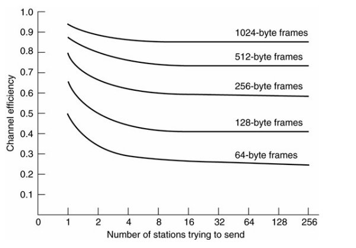
为了提高以太网的传输速度，我们可以采用这些错误：
-
通过减少冲突：
-
使用交换式局域网而不是共享式局域网
-
降低在同一个局域网中计算机设备的数量
使用网桥将不同的局域网链接
-
-
提高数据传输速率
- 使用吉比特以太网
交换式以太网
- 使用中心的交换机替代原有局域网中的集线器
- 交换机只将数据帧转发到确定的输出线路上
- 没有被使用的线路可以用来传送不同的信号，这就允许量同时的多方传输
- 大幅提高了局域网的带宽，如果局域网中接入了
2N个端口，那么带宽将被提升为原来的N倍 - 这种方式也比传统的局域网更加安全
注意需要区分冲突域和广播域：广播域是发送广播包可以收到相关包的所有主机的结合，冲突域是会发送冲突的一系列计算机的集合。
在交换机网络中，交换器没有使用CSMA/CD协议。但是如果交换机下面直接链接了集线器，那么仍然会发生冲突，CSMA/CS协议仍然被需要。
快速以太网
- 保持了传统以太网的帧结构，网卡和其他文本上规则。
- 将比特时间从之前的
100ns调整到10ns - 最小帧大小没有变化
- 所有的快速以太网设备都需要使用集线器和交换机
| Name | Code | Max-Segment | Advangages |
|---|---|---|---|
| 100BaseT4 | Twisted Pair | 100m | 使用CAT3等级的双绞线 |
| 100Base-TX | Twisted Pair | 100m | 100Mpbs全双工 |
| 100Base-FX | 光纤 | 2000m | 1000Mbps全双工 |
100Base-T4
-
使用25
MHz的信号速率 -
需要双绞线中的四对线
其中有两对的传输方向固定，而另外两对的传输方向可以切换，总的来说是半双工的
-
不能使用曼彻斯特编码
100Base-TX
-
使用125
MHz的信号速率 -
需要双绞线中的两对线
传输方向固定，全双工

快速以太网还提供了速率协商的功能，可以同网络中的设备协商传输速度和全/半双工，提供了向上的兼容性。
吉比特以太网
- 再次将以太网的传输速度提高了一倍
- 仍然保持了对以前以前以太网标准的支持
- 同时允许了点对点链接和共享广播链接
交换机
由于此时交换机的存在，以太网工作在全双工模式，CSMA/CD协议也不用了，最大的传输距离基本值取决于信号的强度。
集线器
由于集线器仍然是构成总线型的网络，冲突可能会产生，于是CSMA/CD协议是需要的。
但是由于传输的速度过快，的时间十分短，冲突检测就变得比困难，目前有两种方式可以解决：
-
载波扩展
Carrier extension将不同长度的帧都扩展到512字节的长度
-
帧突发
Frame bursting允许发送方在一次发送中发送连续的许多帧
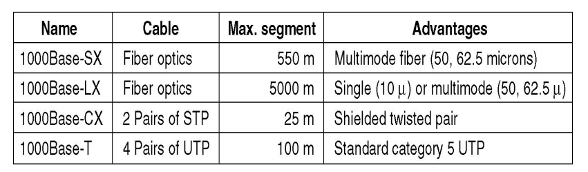
流量控制
由于发送速度较快，使得即使是较短时间的暂停就很容易导致缓冲溢出。
因此在快速以太网和吉比特以太网中，引入了特殊的控制帧，发送这个帧可以让其他的终端暂停发送一段时间。
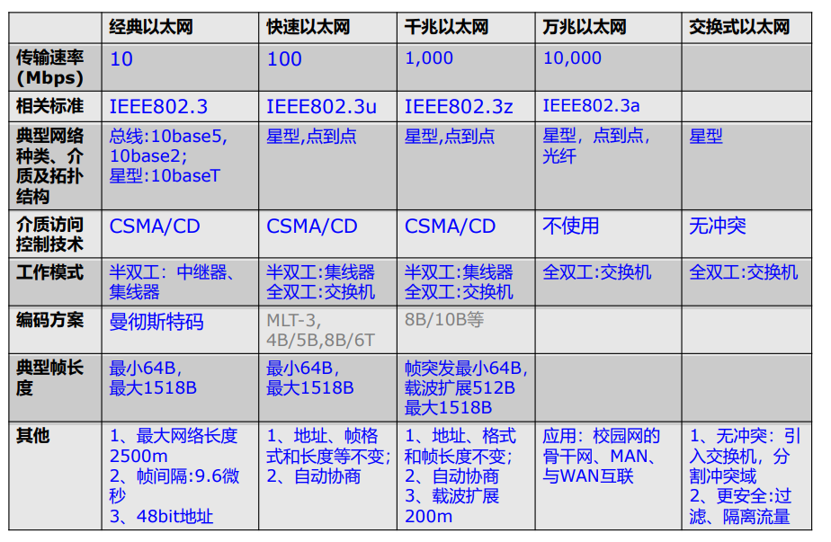
无线局域网
无线连接的相关标准
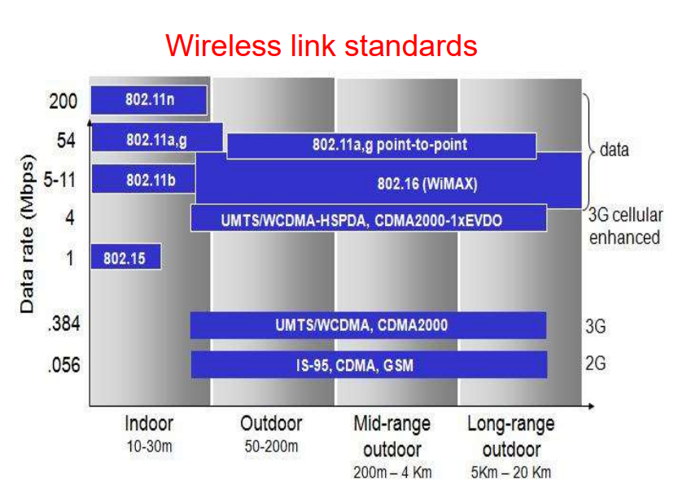
无线局域网：基础架构

无线网络：自组织模式

即没有独立的基站，利用不同的节点本身的信号发送能力将信号发送到附近的节点。
节点们自行组成一个独立的网络。
IEEE 802.11 Wi-Fi
物理层协议
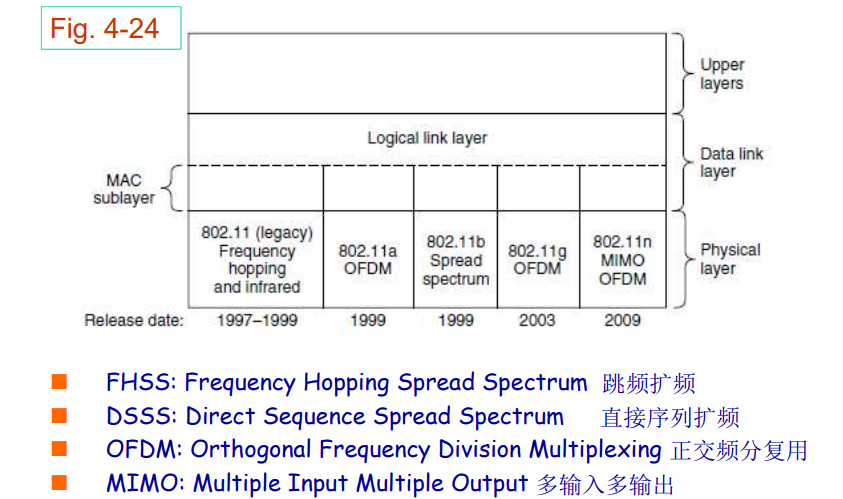
MAC子层
如何避免数据冲突：
-
此时冲突侦测机制已经失效
当信号比较微弱时，难以收到冲突信号
”隐藏基站“问题
-
使用中心化的解决方案：
PCF点协调功能 -
使用去中心化的解决方案：
DCF分布协调功能也就是
CSMA/CA
CSMA/CA协议的具体设计如下：
核心思想：不同正在信道上传输的信号发生冲突。
- 单独的确认帧
- 指数退避算法
- 可选的冲突避免：
RTS和CTS

首先引入两个时间：
DIFS：DCF帧间间隔SIFS：短帧间间隔
首先对于发送方：
- 当发现信道空闲的时间超过
DIFS时，发送方发送数据 - 当信道忙时，启动随机的退避定时器（但是此时定时器不走）。如果检测到信道空闲，开始减小定时器，在定时器到时间时发送。如果没有收到确认帧，还需要延长退避的时间。
对于接收方：
如果一个帧接受没有问题，在等待一个SIFS之后发送确认帧。
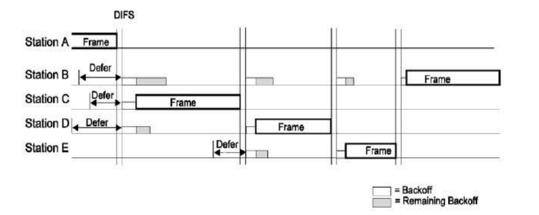
但是上述的设计还没有解决”隐蔽站“和”暴露站“的问题。802.11使用RTS/CTS和NAV来解决这种，其中RTS/CTS是可选的。
网络分配向量NAV是一种虚拟监听机制。每个帧都会包括一个NAV字段，告知其他的站点这个帧的序列会占用信道多长的时间。所有的站点都会跟踪这个NAV字段来确定信道是否处于忙碌状态。
由于这不是通过直接监听信道完成的，所以被称为虚拟监听。

802.11还设计了一种分段突发机制。由于随着帧的长度变长，帧在传输的过程中遇到错误的概率就越大。这个分段突发的机制允许发送方在发送数据的时候将比较长的帧划分为较短的帧，每个短帧都会被当作独立的帧进行处理。
在802.11e中还引入了一种优先级控制系统，可以让优先级较高的帧得到优先发送。这个系统是通过设置不同的帧间间隔来实现的。

下面这张流程图表示了CSMA/CA的大致工作流程。
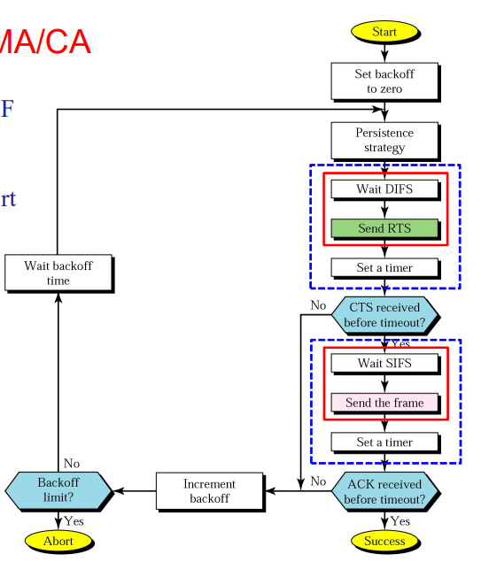
当Wi-Fi网络中同时存在高速设备和低速设备时，如果每个站点每次只能发送一个帧，那么快速站点的速度就会被慢速站点的速度严重拖慢，所以Wi-Fi协议引入了一个TXOP发送机会的概念，每个站点都能得到平均的时间，而不是平均的帧发送个数。
下面介绍Wi-Fi协议中帧的结构：
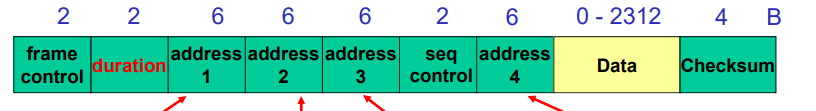
这里帧同以太网中帧的不同有：
- 帧的长度更长
- 数据字段没有了最小的限制
帧中有着三个地址字段，其中第一个地址是接受帧的主机地址，第二个地址是发送方的地址，第三个地址是路由的地址。
802.15 蓝牙
主要在个域网中使用的短距离通信协议，一般都在10米范围内使用。蓝牙都是工作在Ad Hoc模式，没有其他的基础设施。
蓝牙也可以通过Master/Slave模式构成一个局域网。
数据链路层交换
为什么需要将多个局域网连接起来：
- 局域网之间相互交流的需求
- 不同局域网之间物理距离比较大，不能构成同一个局域网
- 将多个局域网划分为多个冲突域，减少冲突
- 隔离设备故障

网桥
网桥是在数据链路层将多个局域网相互连接的设备。
帧从一个局域网发送到另一个局域网时，网桥将根据mac地址在不更改帧的情况下直接转发。
在两个局域网使用的协议不同时，例如Wi-Fi和以太网中，在转发的过程中网桥还会负责协议的转换，数据的重新封装。
在网桥设计的过程中，还有下面这些问题：
- 不同的局域网具有不同的帧格式
- 不同的局域网工作在不同的速率
- 不同的局域网具有不同的最大帧大小
- 安全原因：Wi-Fi网络支持通信加密但是以太网不支持
- 在使用网桥之后延迟会增加
- 没有流量控制功能
- 广播风暴问题没法解决，难以保证服务质量
那么在转发的过程中，网桥如何知道网络地址在那个局域网？网桥是通过自我学习来构建这张查找表的，这种网桥也被称为透明网桥。这个网桥即插即用，在混杂模式之下工作。
转发的过程大致如下：
网桥收到一个帧，查表得到目的端口：
- 如果目的端口和接收到的端口相同，直接忽略
- 如果目的端口和接收到的端口不同，转发
- 如果没找到目的端口或者是广播地址，转发到全部的端口
flooding（当然接受到的端口就不转发了）。
网桥自我学习的过程是一个逆向学习的过程：
- 当设备启动的时候，查找表中没有内容
- 当网桥收到帧时，网桥就能够通过帧中的发送方地址和接受到这个帧的端口号确定发送方就是在这个端口对应的网络上，把记录写入查找表中
在MAC查找表中还有这些值得注意的地方：
- 和
ip地址不同，mac地址是本地的 - 查找表也是本地的，只在一个子网的内部使用
- 构建查找表在构建到路由之后就不再向外部构建了
生成树网桥
生成树网桥是不同于学习网桥的一种网桥。
生成树网桥的出现主要是为了解决以下两个问题：
- 为了提高可靠性，两个局域网之间可能使用多个网桥相连
- 当局域网比较复杂的时候，在网络拓扑图中可能会存在环形结构
IEEE 802.1d规定了一种构建生成树的分布式算法：
- 每个网桥会周期性的广播自己的识别码（通常基于网桥自己的
mac地址） - 拥有最小识别码的网桥将自动成为生成树的根
- 算法将自动构建一个从根到每个网桥和设备的最短路径树
- 算法会在网络拓扑结构改变时自动重新生成树
互联设备的总结
不同互联设备的冲突域有着非常大的不同：
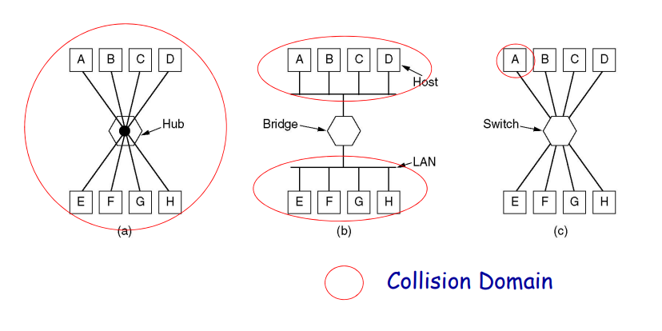
网桥和交换机的对比
网桥的帧转发是通过软件实现的，而交换机常常通过硬件实现。
网桥通常同时只能分析和转发一个帧，交换机可以同时在多个端口上处理多个帧
网桥使用”存储-转发“策略而交换机使用直通策略。
网桥在商业上失败了。
广播域
能够收到FF-FF-FF-FF-FF-FF广播地址包的设备构成一个广播域。
所有连接在同一个局域网上的设备都处在同一广播域。
注意广播域和冲突域的区别。
虚拟局域网
在物理局域网中构建出虚拟的逻辑局域网，用于自己的广播域。
使用虚拟局域网主要解决以下几个问题：
- 安全
- 避免广播风暴。
- 利用软件即可搭建新的逻辑局域网，减少了直接连接线路的成本开支。
物理网桥/交换机使用VLAN ID来区别不同虚拟交换机。
物理网桥和交换机通过VLAN ID知道下面三种信息中的一种：
- 同这个ID相连接的端口
- 同这个ID相连接的
mac地址 - 同这个ID相连接的网络层协议和地址
IEEE 802.1Q协议规定了支持虚拟局域网的帧类型：
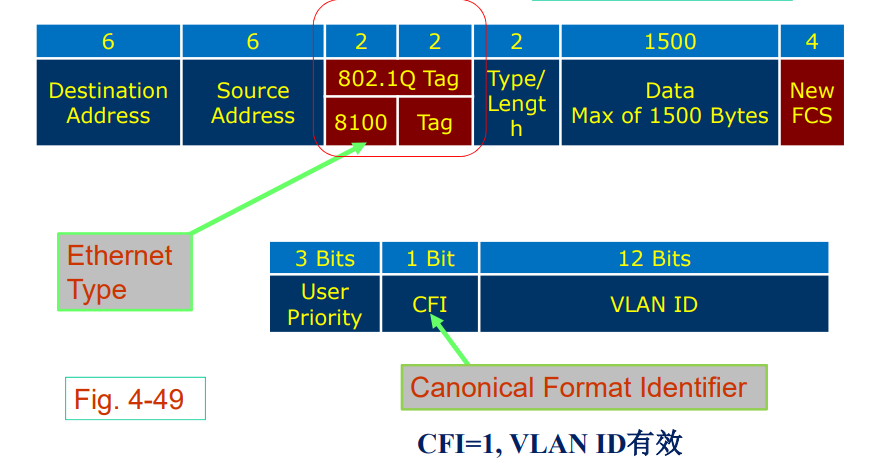